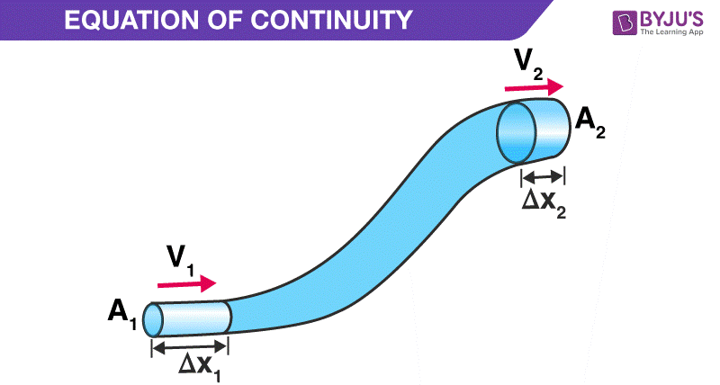

The equation of continuity says something about a fluid traveling through a pipe, where the density is constant and there is steady flow. First, we will define what flow rate (f) is.$$f=Av$$where A is the cross-sectional area the fluid goes through, and v is the velocity.
 From Byju'sAs you can see, the cross-sectional area A1 is smaller than A2, we also have a speed v1 and v2. With this, we can define the volume that enters the pipe every second as A1*v1 - this is m² * (m/s), becoming m³/s.
Additionally, we can say that the mass of liquid entering each second is A1*v1*ρ1, this is also known as the mass flow rate (ṁ). Similarly, the mass of liquid exiting the pipe every second is A2*v2*ρ2.
Since we know that there is no liquid being lost, and there is a steady flow, that must mean the mass entering the pipe each second is the same as the mass exiting the pipe every second, so:$$A_{1}v_{1}ρ_{1}=A_{2}v_{2}ρ_{2}$$We know that the density stays the same for this liquid, so we can remove that on both sides and end up with our final formula:$$A_{1}v_{1}=A_{2}v_{2}$$which states that, when a liquid travels through a pipe with constant density, no loss of liquid, and steady flow, the volumetric flow rate will be constant.
| Name | Unit | Symbol |
|---|---|---|
| Mass flow rate (ṁ) | Kilograms per second | kg/s |
| Volumetric flow rate (f) | Cubic meters per second | m³/s |